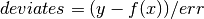
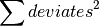

neutronpy.kmpfit.Fitter¶
-
class
neutronpy.kmpfit.Fitter(residuals, deriv=None, params0=None, parinfo=None, ftol=None, xtol=None, gtol=None, epsfcn=None, stepfactor=None, covtol=None, maxiter=None, maxfev=None, nofinitecheck=None, data=None)¶ Uses the implementation in C of MPFIT, Craig Markwardt’s non-linear least squares curve fitting routines for IDL. MPFIT uses the Levenberg-Marquardt technique to solve the least-squares problem, which is a particular strategy for iteratively searching for the best fit. In its typical use, MPFIT will be used to fit a user-supplied function (the “model”) to user-supplied data points (the “data”) by adjusting a set of parameters. MPFIT is based upon the robust routine MINPACK-1 (LMDIF.F) by Moré and collaborators.
Parameters: residuals : func
the residuals function, see description below.
deriv : func
optional derivatives function, see description below. If a derivatives function is given, user-computed explicit derivatives are automatically set for all parameters in the attribute
parinfo, but this can be changed by the user.kwargs :
Notes
Objects of this class are callable and return the fitted parameters when called.
Residuals function The residuals function must return a NumPy (dtype=’d’) array with weighted deviations between the model and the data. It takes two arguments: a NumPy array containing the parameter values and a reference to the attribute
datawhich can be any object containing information about the data to be fitted. E.g., a tuple like(xvalues, yvalues, errors).In a typical scientific problem the residuals should be weighted so that each deviate has a Gaussian sigma of 1.0. If x represents values of the independent variable, y represents a measurement for each value of x, and err represents the error in the measurements, then the deviates could be calculated as follows:

where f is the analytical function representing the model. If err are the 1-sigma uncertainties in y, then

will be the total chi-squared value. Fitter will minimize this value. As described above, the values of x, y and err are passed through Fitter to the residuals function via the attribute
data.Derivatives function The optional derivates function can be used to compute weighted function derivatives, which are used in the minimization process. This can be useful to save time, or when the derivative is tricky to evaluate numerically.
The function takes three arguments: a NumPy array containing the parameter values, a reference to the attribute
dataand a list with boolean values corresponding with the parameters. If a boolean in the list is True, the derivative with respect to the corresponding parameter should be computed, otherwise it may be ignored. Fitter determines these flags depending on how derivatives are specified in itemsideof the attributeparinfo, or whether the parameter is fixed.The function must return a NumPy array with partial derivatives with respect to each parameter. It must have shape (n,m), where n is the number of parameters and m the number of data points.
Configuration attributes The following attributes can be set by the user to specify a Fitter object’s behavior.
Attributes
parinfoA list of dicts with parameter contraints, one dict per parameter, or None if not given. params0Required attribute. dataRequired attribute. ftolRelative  convergence criterium.
convergence criterium.xtolRelative parameter convergence criterium. gtolOrthogonality convergence criterium. epsfcnFinite derivative step size. stepfactorInitial step bound. covtolRange tolerance for covariance calculation. maxiterMaximum number of iterations. maxfevMaximum number of function evaluations. paramsA NumPy array, list or tuple with the fitted parameters. xerrorFinal parameter uncertainties (  )
)covarFinal parameter covariance (NumPy-) matrix. chi2_minFinal .orignormStarting value of .rchi2_minMinimum reduced .stderrStandard errors. nparNumber of parameters. nfreeNumber of free parameters. npeggedNumber of pegged parameters. dofNumber of degrees of freedom. residFinal residuals. niterNumber of iterations. nfevNumber of function evaluations. versionmpfit.c’s version string. statusFitting status code. messageMessage string. residualsresiduals: object nofinitecheckDoes not check for finite values. Methods
fit(self[, params0])Perform a fit with the current values of parameters and other attributes. confidence_band(self, x, dfdp, confprob, f)After the method fithas been called, this method calculates the upper and lower value of the confidence interval for all elements of the NumPy array x.